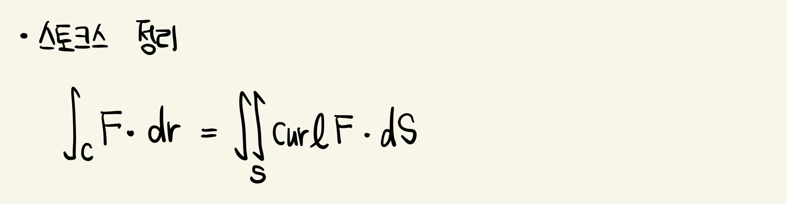

스토크스 정리 (Stokes' Theorem)
곡면 S상의 면적분이 S의 경계곡선상의 선적분과 관계가 있음을 설명
S를 양의 방향을 가지는 단순, 닫힌, 조각적으로 매끄러운 경계곡선 C에 의하여 유계된 조각적으로 매끄러운 유향곡면이라고 하자. F가 벡터장으로 이것의 성분들이 S를 포함하는 ℝ^3에 속하는 열린 영역상에서 연속인 편도함수를 가진다고 하자. 그러면 아래와 같다.

곡면 S상의 면적분이 S의 경계곡선상의 선적분과 관계가 있음을 설명
S를 양의 방향을 가지는 단순, 닫힌, 조각적으로 매끄러운 경계곡선 C에 의하여 유계된 조각적으로 매끄러운 유향곡면이라고 하자. F가 벡터장으로 이것의 성분들이 S를 포함하는 ℝ^3에 속하는 열린 영역상에서 연속인 편도함수를 가진다고 하자. 그러면 아래와 같다.
